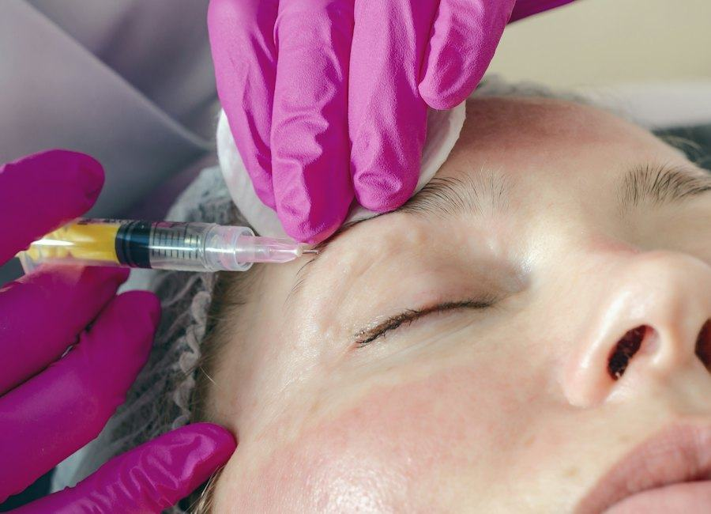

Peeling
Soin de surface de la peau.
Page dédiée →Injections d'acide hyaluronique de la zone autour de la bouche, réalisées par le Dr Jessica Marciano, chirurgien-dentiste, au Centre d'Orthodontie Gravelle.
L'acide hyaluronique est une molécule déjà présente dans la peau. En injection, il peut hydrater ou redonner du volume aux lèvres et au pourtour de la bouche, selon ce qui a été retenu en consultation. Au cabinet, ce n'est pas un « protocole catalogue » : le Dr Jessica Marciano, chirurgien-dentiste, titulaire d'un DU d'orthodontie au Centre d'Orthodontie Gravelle, Charenton-le-Pont, évalue d'abord la zone autour de la bouche, vos antécédents et vos attentes.
Les rendez-vous ont lieu au Centre d'Orthodontie Gravelle, 176 Rue de Paris, 94220 Charenton-le-Pont, dans le Val-de-Marne (94), le même lieu que pour l'orthodontie. Cadre médical, explications, temps d'écoute. Pas de promesse de transformation, pas de tarif affiché en ligne : un devis précède tout acte.

L'acide hyaluronique est une molécule déjà présente dans le corps. Injecté sous forme de gel, il peut hydrater ou redonner du volume. Au centre, il est utilisé uniquement sur la zone autour de la bouche : les lèvres, le contour des lèvres, les plis entre le nez et la bouche (sillons naso-géniens) et le menton. Le but est l'harmonie du sourire. L'effet est temporaire, car le gel se résorbe avec le temps. Sa durée varie d'une personne à l'autre.
Le soin concerne les adultes qui souhaitent un geste ciblé sur les lèvres ou le pourtour de la bouche, après en avoir parlé en consultation.
Le soin n'est pas réalisé chez les mineurs. Il est reporté ou écarté en cas de grossesse ou d'allaitement, d'infection ou de bouton de fièvre (herpès) sur la zone, d'allergie connue à un composant, ou selon certaines maladies et certains traitements. Apportez vos ordonnances à la consultation.
Tout commence par une consultation. On parle de vos attentes, de vos antécédents et de vos traitements. Le Dr Jessica Marciano examine la zone autour de la bouche, au repos et quand vous souriez. Si le soin est indiqué, un devis vous est remis. La séance a lieu le jour même ou lors d'un autre rendez-vous. La séance dure 30 minutes.
Un gonflement, une rougeur, un petit bleu ou une sensibilité peuvent apparaître. Ils disparaissent en général en quelques jours. Les consignes (froid, maquillage, sport, soleil) vous sont expliquées le jour même. En cas de douleur forte, de peau blanche ou marbrée, ou de trouble de la vue, appelez le centre sans attendre.
Le sourire, ce sont les dents et ce qui les entoure. Au centre, l'orthodontie s'occupe de la position des dents et de l'équilibre des mâchoires. Le soin esthétique vient en complément, jamais à la place. Pendant un traitement en cours, il peut être reporté. Vous pouvez aussi venir uniquement pour ce soin, sans être suivi en orthodontie. Voir l'orthodontie adulte et les aligneurs invisibles.
Le Dr Jessica Marciano, chirurgien-dentiste, titulaire d'un DU d'orthodontie. Elle a suivi une formation aux injections d'acide hyaluronique de la zone péri-buccale (IFCP, 2025). Voir le cabinet et l'équipe.
Centre d'Orthodontie Gravelle, 176 Rue de Paris, 94220 Charenton-le-Pont. Métro Liberté (ligne 8), à environ 450 m. Les patients viennent aussi de Saint-Maurice, Maisons-Alfort, Ivry-sur-Seine, du 12e arrondissement de Paris et du reste du Val-de-Marne. Plan et transports · Horaires.
Uniquement la zone autour de la bouche : lèvres, contour des lèvres, sillons naso-géniens et menton.
Oui. L'indication, les contre-indications et le devis sont vus en consultation. Aucun soin n'est fait sans cette étape.
L'effet est temporaire. Sa durée varie selon la personne, la zone et le produit utilisé. Aucune durée n'est garantie.
On peut ressentir un picotement ou une tension pendant le geste. Le confort est discuté en consultation.
En principe non. Il s'agit d'un soin esthétique, hors prise en charge de l'Assurance Maladie. Un devis est remis avant tout soin.
Cela se décide au cas par cas. Le soin peut être reporté pour ne pas gêner le traitement en cours.
Sur Doctolib, ou par téléphone au 01 43 96 26 00.
Soin de surface de la peau.
Page dédiée →Nettoyage et hydratation de la peau.
Page dédiée →Vue d'ensemble des soins esthétiques.
Soins esthétiques →Vue d'ensemble : soins esthétiques · Accueil du cabinet d'orthodontie · Le Dr Jessica Marciano · Contact.
Consultation au Centre d'Orthodontie Gravelle, 176 Rue de Paris, 94220 Charenton-le-Pont. Doctolib ou 01 43 96 26 00.
Prendre rendez‑vous 01 43 96 26 00